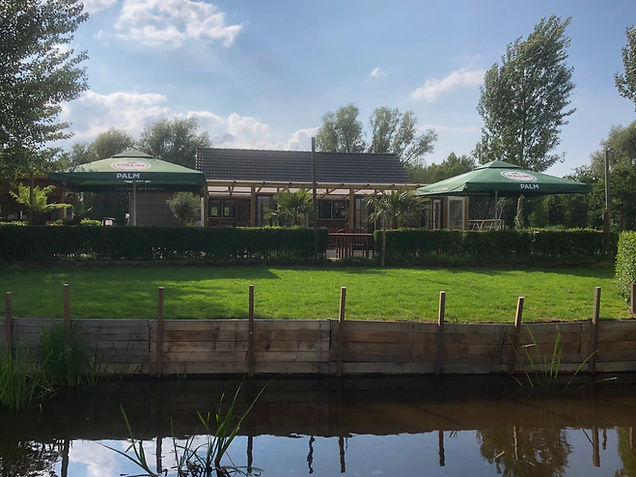
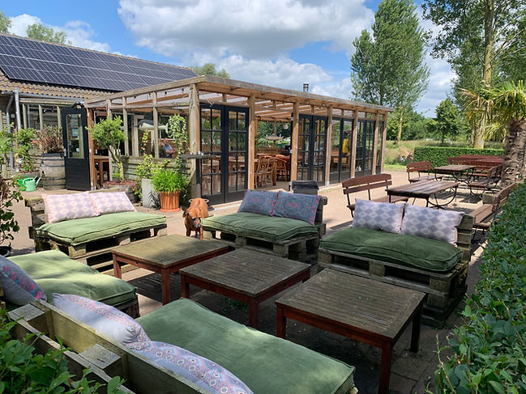
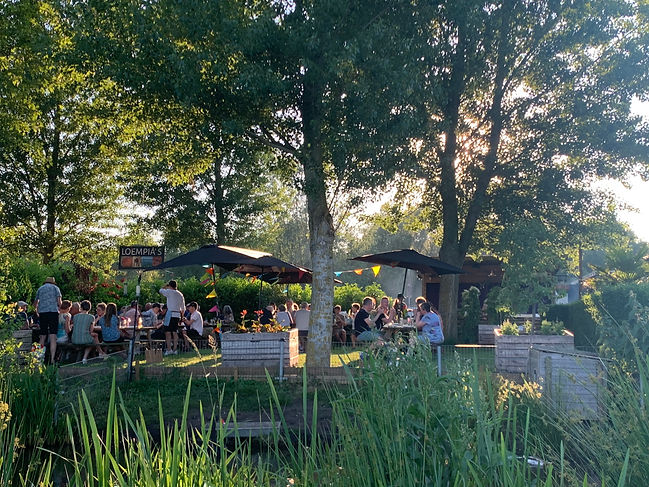
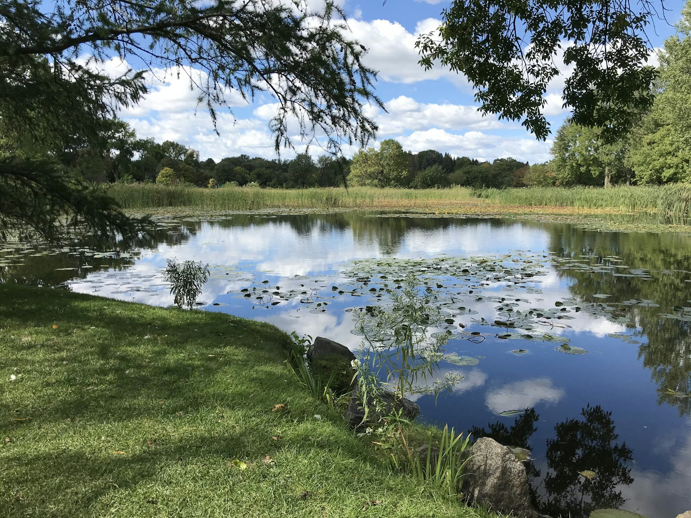
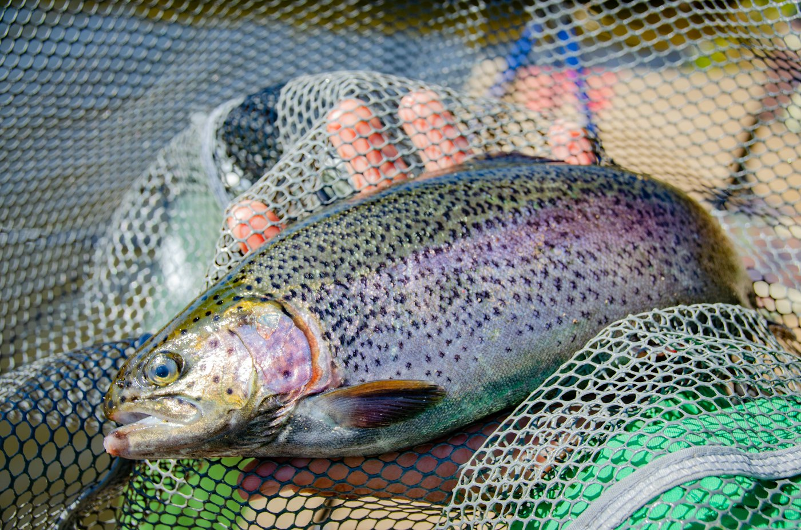
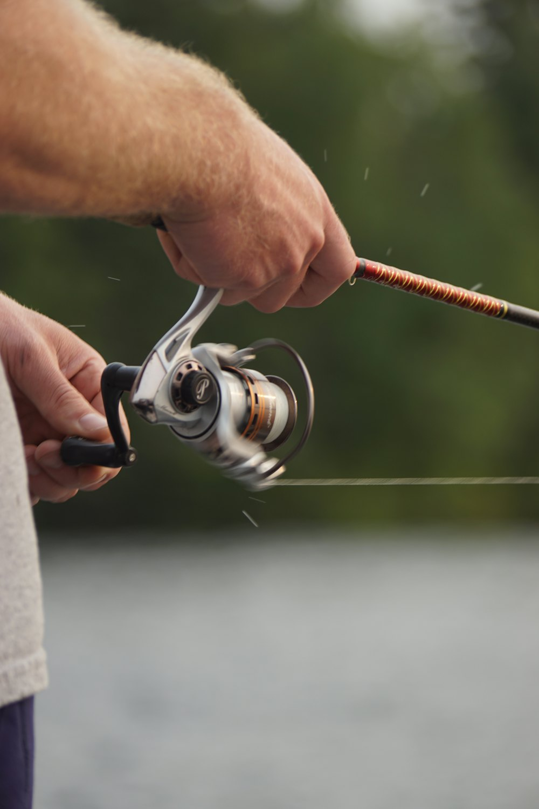
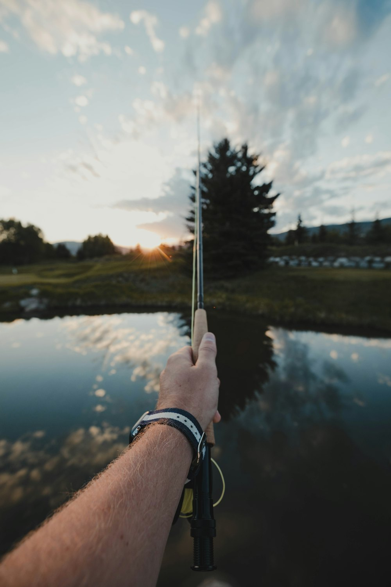
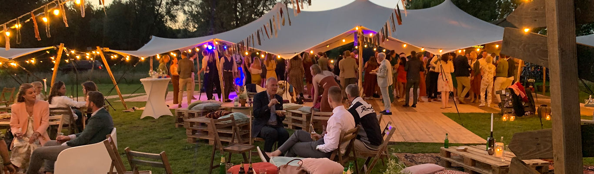
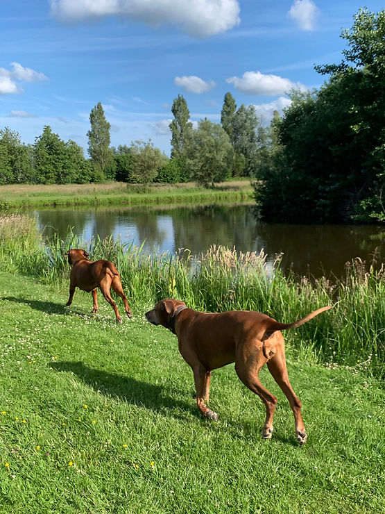

Woensdag t/m zondag open van 9 tot 17
Koffie op het terras, een hengel in het water.
Paviljoen met serre, ruime terrassen en visvijvers op drie hectare polder, tussen Utrecht Overvecht en Groenekan. Het hele jaar door open.


- Wo t/m zo, 9 - 17Het hele jaar open, op aanvraag ook voor groepen
- Geen visvergunningHengel, set en aas kun je bij ons huren of kopen
- Serre tot 80 personenBij mooi weer gaat het feest naar buiten
- Honden welkomMet een losloopgebied voor je viervoeter
Eten & drinken
Neem plaats en geniet van het uitzicht. De sfeer is relaxed en zelfs een beetje huiselijk. Er zijn meerdere terrassen en een ruime serre waar je kunt neerstrijken.
Met geroezemoes op de achtergrond van je drankje genieten, of verwikkeld raken in een goed gesprek met een wijntje erbij. De koffie is van Pelican Rouge, met allerlei Lattiz-melkvarianten. De Palm-biertjes komen van de tap en wisselen per seizoen.
Proef onze huisgemaakte (glutenvrije) loempia's met heerlijke saus, favoriet bij veel vaste gasten.
Wij doen ook barbecues. Eten of borrelen met een groep kan ook: neem contact met ons op.


Vissen bij De Ruigenhoek
Je kunt bij ons vissen op forellen, steuren, Europese meervallen en karpers. Een visvergunning is niet nodig.
- Het water komt via kwel uit de bodem, afkomstig van de Utrechtse Heuvelrug. Bij goede omstandigheden is het kraakhelder, en dat zie je terug in gezonde, sterke vissen.
- Geen hengel of materiaal? Huur het bij ons. Aas verkopen we ook.

Forelvissen
Per dagdeel van 4 uur
| Dagdeel 9:00 - 13:00 | € 22,50 p.p. |
|---|---|
| Dagdeel 13:00 - 17:00 | € 22,50 p.p. |
| Huren | |
| Hengel | € 5,00 |
| Set (onthaker, schepnet, leefnet, knuppel) | € 3,50 |
| Hengel inclusief set | € 7,50 |
| Aas | |
| Wasmotten, morio's en meelwormen, per bakje | € 3,50 - 5,00 |
Forelvijver
Er zijn twee forelvijvers waar je met een werphengel en levend aas vist, zoals meelwormen, wasmotten en maden. Geen hengel? Geen probleem, die huur je bij ons, en aas verkopen we ook. Je hoeft dus niets mee te nemen, en ervaring is niet nodig.
Zo werkt het
Forelvissen doe je in dagdelen van 4 uur, met vaste starttijden om 9:00 en 13:00. Na de start zetten we per visser 2 kilo regenboogforellen uit, gemiddeld 3 in een kilo. Wat je vangt neem je mee, of je geeft het aan een medevisser. Forel is lekker en gezond.
Je kunt de vijver ook afhuren. Neem contact op voor maatwerk, en vraag naar onze arrangementen vissen & eten.
Huisregels forelvissen
- Alleen levend aas: meelwormen, wasmotten en morio's. Geen spinners, kunstaas of powerbait.
- Gevangen forellen neem je mee. Eerst doden, dan onthaken; niet levend in het leefnet bewaren.
- Eén hengel met één haak per persoon, en niet met meerdere personen op één hengel.
- Niet voeren op de forelvijvers.
- Alle huisregels forelvissen (PDF)

Combivijver
Minimaal 2 uur, daarna per uur
| Start: 2 uur vissen | € 12,50 |
|---|---|
| Ieder uur daarna | € 4,00 |
| Hele dag vissen (max. 8 uur) | vraag aan de bar |
| Huren | |
| Hengel | € 7,50 |
| Losse set (onthaker, onthakingsmat, schepnet) | € 3,50 |
| Hengel inclusief set | € 10,00 |
| Aas | |
| Kaas, garnalen, pellets of zure haring, per bakje | € 2,50 - 5,00 |
Wil je komen vissen? Graag vooraf reserveren.
Steur, meerval & karper
In de combivijver zwemmen steuren, meervallen en karpers, en de kans dat je iets vangt is groot. Er zitten joekels in, van een halve tot tweeënhalve meter. Heb je beet, zet je dan schrap voor een flinke strijd. Je vangst zet je weer terug.
Zo werkt het
Je kunt op elk moment starten. Meld je aan bij de bar: wij noteren je begintijd en rekenen na afloop je geviste uren af. Minimaal twee uur voor een vaste prijs, daarna per uur.
Eens in de zoveel tijd organiseren we nachtvissen: je tentje opzetten en de hele nacht vissen. Wij zorgen voor avondeten en ontbijt. Vraag naar de volgende datum.
Steuren
Indrukwekkende vissen in allerlei maten, vormen en kleuren: Siberische steur, Beluga, Diamant/Russische steur en Sterlet.
Meervallen
Supersterke oerbeesten. Zo groot als het wereldrecord van bijna 300 kilo worden ze hier niet, maar wel van mooi formaat. Uitsluitend Europese meervallen.
Karpers
Elke soort herken je aan zijn schubbenpatroon. Bij ons vang je Spiegel, Schub, Gras en Koi.
Huisregels steur, meerval & karper
- Weerhaakloos vissen; onthakingsmat en schepnet zijn verplicht. Houd de mat nat.
- Lijndikte minimaal 0,25 en maximaal 0,35 mm, haakmaat 6 of 8. Meerdere hengels zijn hier toegestaan.
- Op de foto houd je de vis maximaal op kniehoogte boven de mat, en zet je hem snel terug.
- Alle huisregels steur, meerval en karper (PDF)

Vliegvissen
Per uur, start wanneer je wilt
| Per uur | € 5,00 |
|---|---|
| Vanaf het 5e uur, per uur | € 2,50 |
| Huur schepnet | € 2,50 |
Vliegvissen
De vliegvisvijver is onze grootste. Het kwelwater van de Utrechtse Heuvelrug is onder ideale omstandigheden kraakhelder. Er zijn regenboogforellen, zalmforellen, saiblings en beekforellen uitgezet. Vanaf het voorjaar zie je de forellen veel aan de oppervlakte azen, omdat er dan veel vliegen en insecten op het water landen.
Met vliegvissen imiteer je een vlieg die op het menu van een forel staat. De juiste vlieg op de juiste plek, en hopelijk klapt er een forel op. Vangsten zet je terug; ze zijn niet voor consumptie.
Zo werkt het
Je vist per uur en start op elk gewenst moment. Meld je vooraf aan bij de bar zodat we je begintijd noteren, en meld je af als je klaar bent. Vliegvissen is vrij technisch en vraagt veel oefening.
Informeer naar onze cursussen. Voor vliegvisclubs hebben we arrangementen met eten en drinken.
In de zomer kan de vliegvisvijver bij aanhoudende warmte gesloten zijn.
Huisregels vliegvissen
- Alleen met een vliegenhengel, weerhaakloos. Hengel maat 5 of 6 aanbevolen, lijndikte minimaal 0,18 mm.
- Onthaak de forel in het water. Een schepnet is verplicht (te huur).
- Hengels optuigen bij de auto of aan de waterkant.
- Bij warmte sluit de vliegvisvijver.
- Alle huisregels vliegvissen (PDF)
Huisregels voor alle vissers
- Blijf aan de vijver waarvoor je betaald hebt.
- Eén hengel met één haak (bij steur, meerval en karper mogen meerdere hengels). Niet met meerdere personen op één hengel.
- Niet opzettelijk haken; dreggen en gevlochten lijnen zijn verboden.
- Neem je afval mee, en laat je visspullen buiten.
- Eigen consumpties zijn niet toegestaan.
Huisregels voor iedereen
- Je betreedt het terrein op eigen risico.
- Honden zijn welkom aan de (korte) lijn; niet aan de waterkant zonder toestemming.
- Niet zonder toestemming de vijvers in; zwemmen is verboden.
- Eigen consumpties zijn niet toegestaan.
- Wie zich misdraagt, wordt verwijderd. We zijn niet aansprakelijk voor diefstal of verlies.

Iets te vieren?
Wij zijn dol op feestjes en denken graag mee om jouw viering heel bijzonder te maken. Weet je wat je wilt, kom het ons vertellen. Ken je de locatie nog niet? Kom een keer langs om de sfeer te proeven.
80
personen past de serre. Bij mooi weer verhuist het feest naar buiten.
Probeer onze buffetten uit eigen keuken, of een barbecue met huisgemaakte salades.
Bedrijven
Een fijne plek om in alle rust te vergaderen of bijeen te komen. Of zoek je een origineel bedrijfsuitje of een locatie voor een feest? Makkelijk bereikbaar, met gratis parkeren op eigen terrein.
Back to basic: vis op forel en bereid je vangst op de barbecue.
Groepen
Vrijgezellenfeest, familiedag, kinderfeestje, vriendengroep, reünie, clubs en verenigingen: bedenk het maar.
Tip: combineer vissen op steur, meerval en karper met een lekkere Irish burger.
Trouwen
'Ja, ik wil' zeggen in de polder, omringd door water. Aansluitend een borrel of feest kan, of een volledig verzorgde dag. Deel je ideeën met ons, dan maken we samen je trouwdag heel bijzonder.
Vertel ons wat je wilt vieren
Feest, bedrijfsuitje, bruiloft, groepsarrangement of een vijver afhuren: laat een bericht achter, of bel 030 290 14 93.
Afscheid nemen
Bij De Ruigenhoek heerst een ongedwongen, intieme sfeer. Wij luisteren met aandacht naar uw wensen voor de afscheidsceremonie.
Samen zorgen we ervoor dat u een afscheid krijgt dat past bij uw dierbare. U kunt ons bellen op 030 290 14 93 of mailen naar info@forelvijverderuigenhoek.nl.
Dagcamping
Voor de vakantie even je tent of caravan uitproberen? Of gewoon het vrije campinggevoel ervaren?
Zo werkt het
- Geef bij de bar aan dat je de dagcamping wilt gebruiken. Wij noteren je begintijd.
- Zet je tent of caravan op en geniet. De dagcamping is open tijdens onze openingstijden.
- Reken af voordat je vertrekt. Overnachten is niet mogelijk.
Dagcamping
Inclusief 2 personen
| 2 uur | € 5,00 |
|---|---|
| 4 uur | € 7,50 |
| Hele dag | € 11,50 |
| Extra persoon | € 1,50 |
| Kinderen tot 11 jaar | gratis |
| Honden | gratis |
Lees ook even onze huisregels.

Welkom in de polder
In het poldergebied tegen Utrecht-stad, omringd door bossen en charmante landerijen. Op drie hectare liggen visvijvers, grasvelden en een paviljoen met serre en ruim terras.
- 2004Het idee, en we wisten precies welk plekje perfect zou zijn: de weilanden tussen Utrecht Overvecht en Groenekan.
- Zeven jaar laterNa een lange voorbereiding en wachttijd ging eindelijk de eerste schop de grond in.
- Voorjaar 2012De deuren gingen open. Inmiddels zijn we een fijne plek met veel vaste gasten.
- Veel fiets- en wandelroutes leiden langs ons stekkie
- Genoeg activiteiten en speeltoestellen voor kids in de buurt
- Een losloopgebied voor honden
Met z'n tweeën runnen we het bedrijf, met hulp van ons team. Vragen? Stel ze aan Huyen of Rick.
Langskomen
Openingstijden
| Maandag | gesloten |
|---|---|
| Dinsdag | gesloten |
| Woensdag | 9:00 - 17:00 |
| Donderdag | 9:00 - 17:00 |
| Vrijdag | 9:00 - 17:00 |
| Zaterdag | 9:00 - 17:00 |
| Zondag | 9:00 - 17:00 |
Het hele jaar open. Op aanvraag open voor groepen en bedrijven. Rond feestdagen kunnen de tijden afwijken; bel bij twijfel even.
Adres & contact
Bij De Ruigenhoek
St. Anthoniedijk 120
3566 ME Utrecht
Telefoon 030 290 14 93
Mobiel 06 57 79 06 55
E-mail info@forelvijverderuigenhoek.nl
Gratis parkeren op eigen terrein.